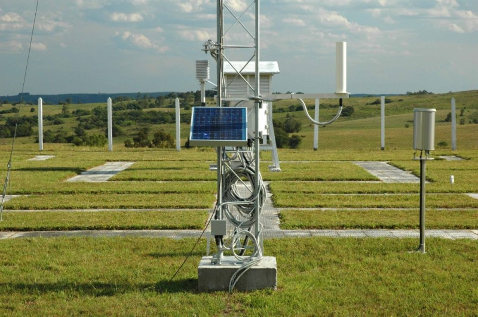
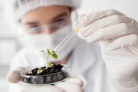
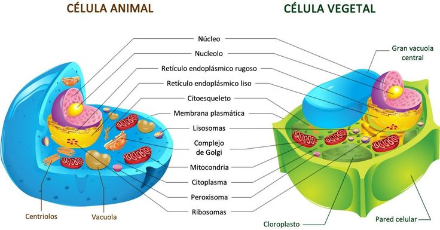

TerraFértil
O site "TerraFértil" foi criado com o intuito de ajudar as pessoas a se especializarem na área de agronomia de forma objetiva. Aqui você pode encontrar diversos cursos que te ajudam a ter mais conhecimento sobre diversas áreas desse ramo de forma rápida e prática.
Cursos Básicos:
Agrometeorologia
O curso de Agrometeorologia mostra a interação entre meteorologia e agricultura, ensinando os principais temas da meteorologia como a interação dos fenômenos meteorológicos e seus impactos na cadeia produtiva do sistema agropecuário da agricultura e do impacto do clima nas culturas, mostrando como escolher o melhor dia para iniciar o plantio da safra, manejo e irrigação do solo, e também definir o calendário de atividades das lavouras.
Biotecnologia
O curso de biotecnologia é um campo de estudo fundamental para criar produtos ou solucionar problemas em diversos setores, como agricultura, saúde, indústria alimentícia e ambiental. Oferece uma formação completa das aplicação de técnicas como engenharia genética, genômica, biologia molecular, cultivo celular e bioinformática. Questões éticas e regulamentações também são discutidas, preparando para atuar em pesquisa científica, desenvolvimento de produtos e diversas aplicações industriais e médicas.
Fisiologia Vegetal e Animal
No curso de fisiologia vegetal e animal entendemos o funcionamento dos vegetais como a fotossíntese, respiração, transporte de nutrientes e água, e crescimento em plantas, além de explorar a função dos hormônios e respostas ao estresse. Em animais, o foco está nos sistemas de órgãos, homeostase, metabolismo energético, neurofisiologia e respostas ao estresse.
Cartografia
Adquira Mais:
- Manejo Integrado de Pragas e Doenças:Um curso focado em estratégias sustentáveis para controlar pragas e doenças em culturas agrícolas, utilizando métodos biológicos, químicos e culturais.
- Agroecologia: Este curso enfatiza práticas agrícolas que são socialmente justas, economicamente viáveis e ecologicamente sustentáveis, integrando princípios ecológicos à produção agrícola.
- Tecnologia de Produção de Sementes:Este curso foca no estudo e aplicação de técnicas avançadas para melhorar a qualidade, viabilidade e eficiência na produção de sementes agrícolas.
- Nutrição de Plantas:Um curso que explora os princípios da nutrição mineral de plantas, incluindo a absorção de nutrientes, diagnóstico de deficiências e práticas de fertilização adequadas.
- Economia e Gestão Rural:Um curso que abrange o estudo das práticas econômicas e estratégias de gestão aplicadas às atividades agrícolas e agropecuárias, visando maximizar a eficiência e sustentabilidade das operações no meio rural.
- Sistemas Agroflorestais:Focado na integração de árvores, culturas agrícolas e animais em sistemas sustentáveis que promovem a biodiversidade, a conservação do solo e o uso eficiente de recursos.
- Horticultura:É um programa educacional que explora o cultivo, manejo e produção de plantas hortícolas, focando em técnicas de cultivo, melhoramento genético, manejo de pragas e doenças, e práticas sustentáveis para otimizar a produção de alimentos e ornamentais.
Aquira Mais Cursos:
Planos:
Planos Semanais
>Neste tipo de plano você paga semanalmente um valor específico por tipo de plano (Ex:pro, premium, plus) e ganha as devidas recompensas. Em todos eles você consegue diversos tipos de cursos juntos.
Plano Mensal
>Neste plano você paga mensalmente um valor específico por tipo de plano e recebe as recompenas de cada um. Em todos eles você recebe cursos diversos e videoaulas diversas.
Plano Anual
>Descrever o plano anual.